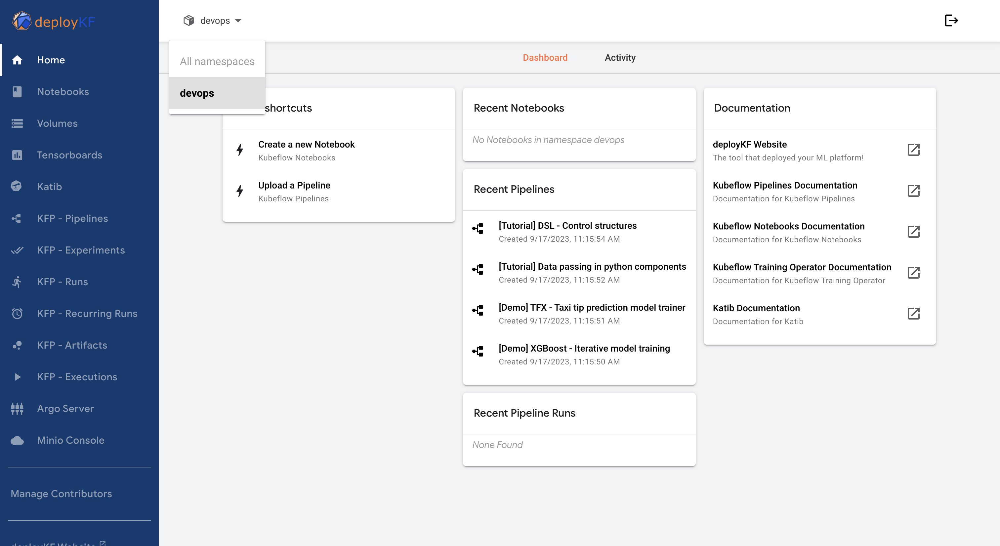

3. Platform Introduction Tutorial¶
In this tutorial, you will learn how to navigate and utilize the various features of our platform. You can access the Kubeflow dashboad at https://kubeflow.prod.slo.ca.vai-compute.com. The UI includes the following: Let’s dive in!
3.1. Structure of the Platform¶
1. Notebook Servers: |
Start by launching Jupyter notebook servers. These are essential tools for data scientists, allowing for rapid prototyping and development. You can create, edit, and manage your Jupyter notebooks here. |
2. Models: |
Next, you’ll want to manage your machine learning models. Our platform uses KFServing, a serverless framework that allows for the deployment of machine learning models in a Kubernetes environment. |
3. Volumes: |
Lastly, under structure, you’ll find where you can manage your storage volumes. These are associated with your Kubeflow cluster and can be used to store data, model artifacts, and more. |
3.2. Project Management¶
1. Pipelines: |
Moving on to project management, you’ll first encounter Kubeflow Pipelines (KFP). These are end-to-end workflows that are reusable and reproducible, allowing you to build, evaluate, deploy, and validate ML models. |
2. Experiments (AutoML): |
You can also manage Katib experiments here. Katib is a Kubernetes-native project for automated machine learning (AutoML) that supports hyperparameter tuning, early stopping, and neural architecture search. |
3. Experiments (KFP): |
In addition to Katib experiments, you can manage experiments in Kubeflow Pipelines. An experiment in KFP represents a workspace where you can try different configurations of your pipelines. |
4. Runs: |
This is where you can manage individual runs of your KFP pipelines. A run represents a single execution of a pipeline. |
5. Recurring Runs: |
Lastly for project management, you can set up recurring runs in KFP. A recurring run is a repeatable run of a pipeline. |
3.3. Monitoring Tools¶
1. TensorBoards: |
Under monitoring tools, you’ll first find TensorBoard servers. TensorBoard provides visualization and tooling for machine learning experimentation. |
2. Artifacts: |
You can also track ML Metadata (MLMD) artifacts here. An artifact represents an input or an output of individual steps in an ML workflow. |
3. Executions: |
Lastly, this is where you can track various component executions in MLMD. |
And that’s it! You’re now ready to start exploring and utilizing the platform to its fullest potential.
Now that you have seen the platform, we can show you what happens under the hood by introducing pipelines.